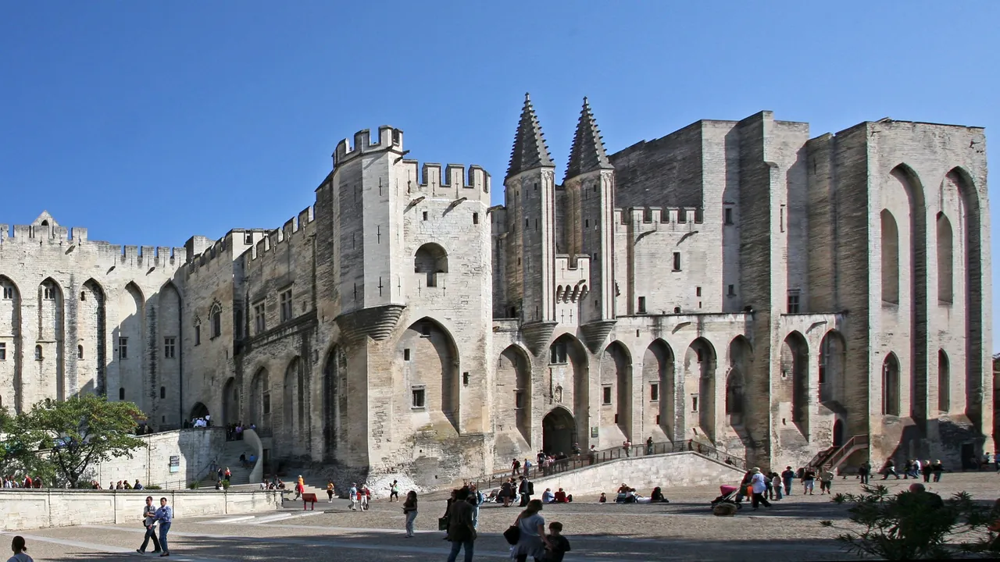
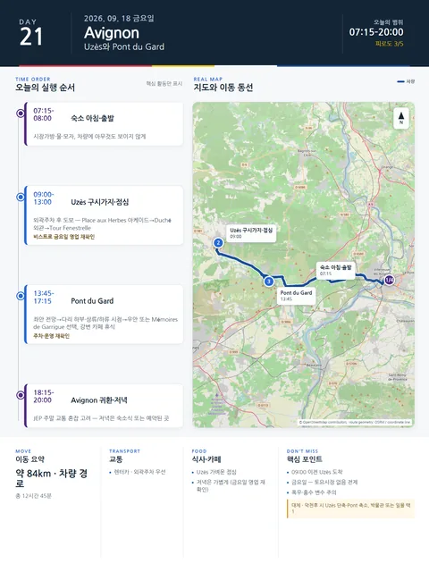

Day 21 · 9/18 금 · Avignon

오늘의 주요 장소


- 핵심 실행
- Uzès 구시가지·Pont du Gard
- 권장 출발
- 08:30 출발
- 완충
- 주차·Pont 이동 45분
- 예약
- 이 날짜로 잡힌 예약 없음 · 현황
시간표
| 시간 | 일정 | 실행 포인트 |
|---|---|---|
| 07:15–08:00 | 숙소 아침·출발준비 | 시장가방, 물, 모자, 차량에 아무것도 보이지 않게 정리 |
| 08:00–08:55 | Avignon→Uzès | 금요일이라 시장이 없다 — 혼잡이 없으므로 도착 시각에 여유가 있다 |
| 09:00–09:25 | 외곽주차→Place aux Herbes | 중심부 진입보다 외곽 관리주차장 후 도보 |
| 09:25–11:00 | Uzès Place aux Herbes·구시가지 | 시장 없는 날의 우제스 — 카페·아케이드·생활상점과 Tour Fenestrelle 중심 |
| 11:00–12:00 | Uzès 구시가지 | Place aux Herbes 아케이드→Duché 외관→Tour Fenestrelle→골목 |
| 12:00–13:00 | 가벼운 점심 | Place aux Herbes 주변 비스트로 후보의 금요일 영업 영업일 확인 |
| 13:00–13:35 | Uzès→Pont du Gard | 시장 구매품은 차량 안에서 보이지 않게 보관 |
| 13:45–16:30 | Pont du Gard | 좌안 전망→다리 하부·상류/하류 시점→우안 또는 Mémoires de Garrigue 선택 |
| 16:30–17:15 | 강변 카페·휴식 | 더위·바람에 따라 체류 조절 |
| 17:15–18:15 | 선택: 일몰 전 추가산책 | 9/20까지 해질녘 조명 안내가 있으나 귀환과 피로 고려 |
| 18:15–19:15 | Avignon 귀환 | JEP 주말 교통 혼잡 고려 |
| 20:00 전후 | 가벼운 저녁 | 숙소식 또는 Fou de Fafa·Cocottes 중 예약된 곳 |
피로도
4/5
이 날의 장소
일자별 시간표와 본문 표기에서 찾은 것이다. 하루의 전부가 아니라 장소 카드가 있는 것만 담는다.
이 날의 메모
Uzès 구시가지와 Pont du Gard — 생활도시와 로마공학
- 오늘의 결론: 시장 혼잡+운전+노출된 유적지 보행이 겹친다.
실행 시간표
오늘 꼭 해볼 것
- Place aux Herbes를 한 바퀴 돌기 전에 카페 테이블에서 시장 전체를 먼저 관찰하기
- 올리브·염소치즈·빵·과일 중 실제 먹을 수 있는 양만 사기
- 관광상품 노점보다 지역 식품·바구니·도자기·직물 노점을 비교하기
- Duché 내부는 특별한 관심이 있을 때만 선택하고 골목·광장을 우선하기
대안·실용 메모
- 사이트·주차장: 연중 08:00–24:00.
- 문화공간: 9월 공식 안내 09:00–19:00, 매주 월요일 오전 유지보수 가능.
- 조명: 2026년 5월 15일–9월 20일 매일 해질녘 조명 예정.
- 권장 체류: 경관만 1시간 30분, 전시·산책 포함 2시간 30분.
- 핵심: 박물관보다 강변에서 3층 아치의 비례와 수로 높이를 직접 보는 것이 우선.
선택모듈
- A 경관형: 다리 양측 시점+강변만, 1시간 30분
- B 이해형: 박물관·수로 설명 추가, 2시간 30분
- C 저녁형: 조명까지 대기하되 Avignon 귀환 20:30 이후 허용
- 우천형: Uzès 구시가지 축소+Pont 실내공간 후 조기귀환
상세 실행 확인
- 최고 리스크
- 금요일 시장 없음·폭우/홍수
- 우선 삭제
- 박물관 또는 일몰
- 대체안
- Uzès 단축·Pont 축소
- 식사·휴식
- Uzès 빵집/비스트로
- 잠금 필요
- 주차·Pont
Google 실행지도
Uzès 구시가지와 Pont du Gard
지도 펼치기
지도는 펼칠 때만 불러옵니다.
Daily Action Map

실제 좌표와 OpenStreetMap을 사용한 실행용 요약입니다. 도로·대중교통 상황은 출발 직전에 다시 확인하세요.